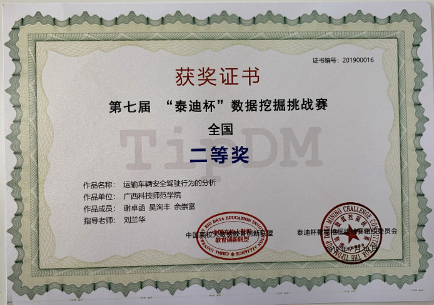

一、团队成员：
小组成员：大数据172谢卓函，大数据172吴洵丰，大数据174余崇富
指导老师：刘兰华
二、比赛描述及结果展示：
“泰迪杯”全国数据挖掘挑战赛（以下简称泰迪杯）是由中国高校大数据教育创新联盟和泰迪杯数据挖掘挑战赛组织委员会主办，
广州泰迪智能科技有限公司承办，广东省工业与应用数学学会、华南师范大学协办的面向全国在校研究生和大学生的群众性科技活动，
目的在于激励学生学习数据挖掘的积极性，提高学生利用数据分析方法解决实际问题的综合能力，鼓励广大学生踊跃参加课外科技活动，
开拓知识面，培养创造精神及合作意识，推动数据挖掘技术在高校的推广和应用。
我校大数据专业学生谢卓函、吴洵丰、余崇富参加了第七届“泰迪杯”比赛并荣获二等奖。
获奖证书
